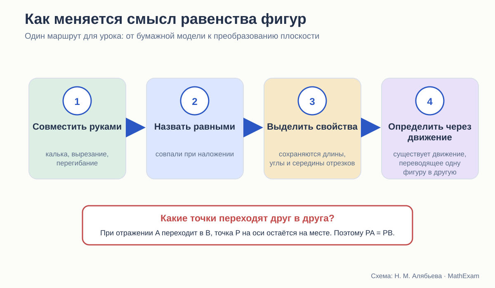
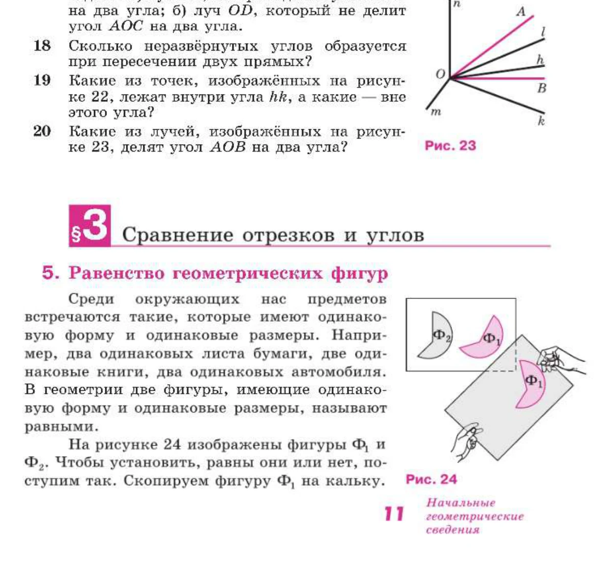
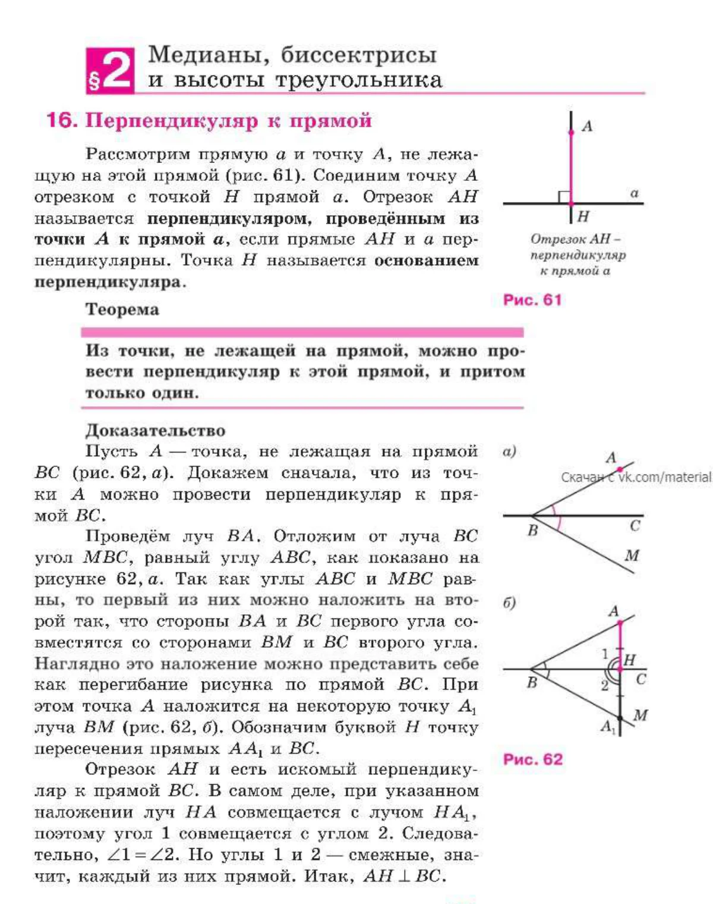
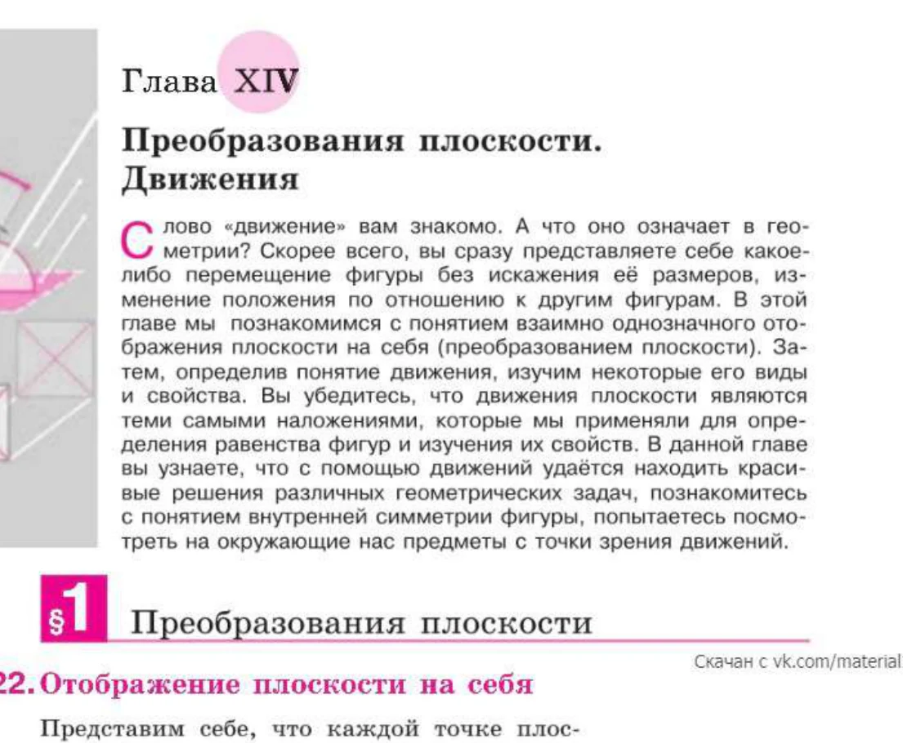
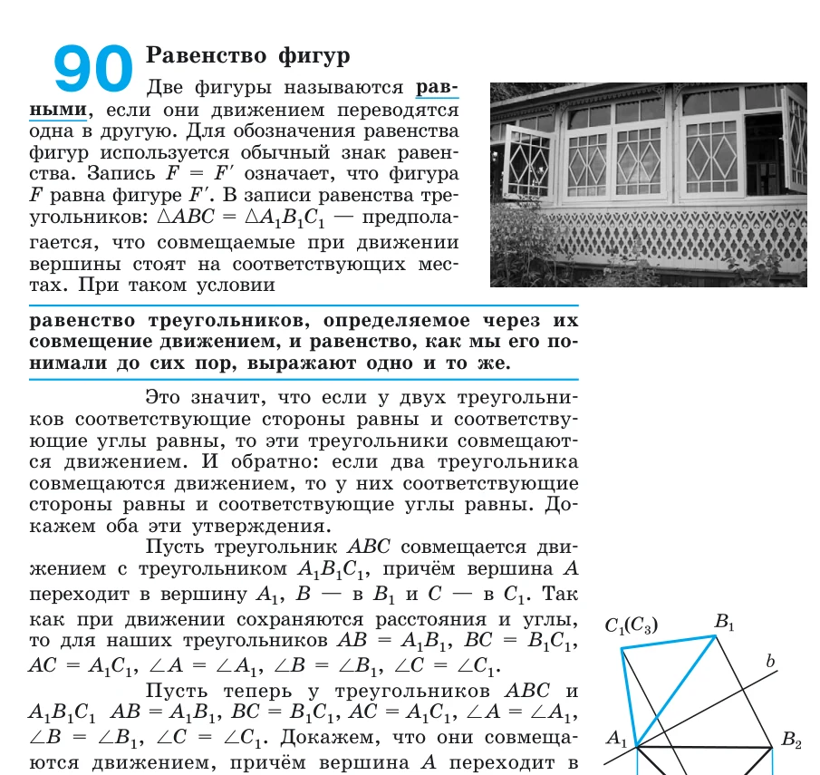
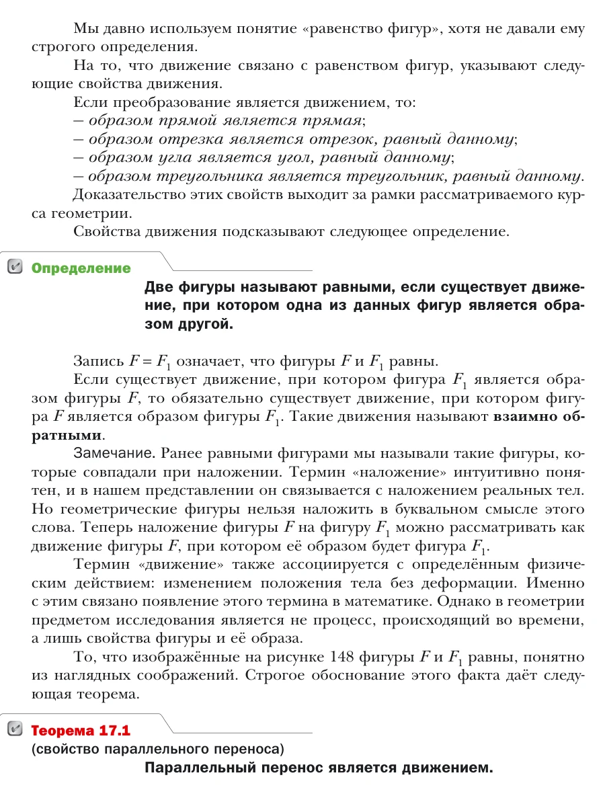

Стройность школьного курса геометрии · статья 4 из 12
Наложение, перегибание и движение
Как меняется смысл равенства фигур от бумажной модели до преобразования плоскости.

Что сохраняется при отражении

При сгибании A совмещается с B. Точки P и M лежат на сгибе, M — середина AB. Проведите PA и PB. Чтобы узнать, во что перейдёт отрезок PA при отражении относительно линии сгиба, сначала укажите образ каждого его конца.
Разбор для учителя
P остаётся на месте, A переходит в B. Если уже установлено, что отражение сохраняет расстояния, отсюда следует PA = PB. А если ученик говорит лишь «у них общий конец P», попросите сравнить произвольные отрезки, проведённые из одной точки. Для равенства существенно, что концы соответствуют друг другу при одном и том же движении.
Измените одну точку. Возьмите Q вне сгиба, отметьте её зеркальный образ Q′ и соедините Q с A. Образом отрезка QA будет Q′B. Движение даёт QA = Q′B. Замена Q′ на Q в этой записи потребовала бы отдельного основания. Так становится видно, зачем в исходном доказательстве понадобилось условие о положении P.
Одно слово — несколько разных смыслов
Совместить два бумажных треугольника, назвать равные стороны и указать движение, переводящее одну фигуру в другую, — три разных задания. В первом ребёнку помогает калька. Во втором приходится выписать соответствующие вершины. В третьем надо сказать, что происходит с каждой точкой фигуры и почему сохраняются расстояния.
Я прослежу одну связь: каким языком книга вводит равенство в начале курса и как возвращается к нему, когда появляется определение движения.
Виленкин: сначала физический опыт
В 6 классе симметричные отрезки предлагается проверить перегибанием листа. При сгибе они совпадают, и это служит убедительным для ребёнка подтверждением равенства.

Этот пример объясняет, на какой опыт может опереться учитель, если класс работал с таким заданием. Убедиться, что конкретный ученик помнит идею совмещения, помогает вопрос об образе второго конца отрезка в практикуме выше.
Атанасян: наложение становится определением
В начале курса Атанасяна равенство геометрических фигур вводится через совмещение. Для проверки предлагается скопировать одну фигуру на кальку и наложить её на другую. Затем тем же способом сравниваются отрезки и углы.

Это понятный переход от опыта Виленкина. Ученик не должен сначала осваивать язык отображений плоскости: он уже знает, что значит совместить две формы.
Однако теперь наложение используется не только для наблюдения. Оно входит в определения, а вскоре — и в доказательства. Значит, от него требуются свойства:
- фигуру можно разместить в нужном положении;
- расстояния при этом не меняются;
- лучи и углы переходят в лучи и углы;
- порядок точек сохраняется;
- если совпали все три соответствующие вершины треугольников, совпадут и соединяющие их стороны.
В ранней части курса эти свойства не собраны в отдельную теорию. Они воспринимаются как естественные свойства физического перемещения.
Наложение в доказательстве
Самый заметный пример — первый признак равенства треугольников. Треугольник предлагается наложить на другой так, чтобы совпали вершина и стороны заданного угла. Равенство сторон обеспечивает совпадение остальных вершин.
Логическая идея верна: если существует сохраняющее расстояния преобразование, которое переводит заданные элементы в соответствующие элементы, треугольники совпадут.
Но школьный текст говорит не о преобразовании, а о наложении. Поэтому доказательство фактически опирается на неявное понимание движения.
Ещё выразительнее доказательство существования перпендикуляра из точки к прямой. Наложение предлагается представить как мысленное перегибание рисунка.

У этого рисунка стоит задержаться на точке пересечения сгиба и отрезка, соединяющего точку с её образом. Два смежных угла при пересечении совмещаются. Равные смежные углы — прямые. Это последний шаг доказательства существования перпендикуляра, и ученик может восстановить его сам. Для единственности перпендикуляра нужен ещё отдельный довод.
Поздний ответ Атанасяна
В 9 классе, в главе «Преобразования плоскости. Движения», автор прямо связывает движения с теми самыми наложениями, которые использовались раньше для определения равенства и изучения свойств фигур.

Для девятиклассника это повод вновь открыть с. 33. В младшем классе вопрос звучал так: какие два угла совместятся? Теперь можно спросить, какие точки неподвижны при осевой симметрии и во что перейдут стороны углов. Поздняя глава даёт язык для перечитывания того же доказательства.
Погорелов: сначала равенство элементов
Погорелов в начале курса определяет равные отрезки через равенство длин, равные углы — через равенство градусных мер, а равные треугольники — через равенство соответствующих сторон и углов.
Это принципиально другой выбор. Равенство треугольников не определяется через физическое наложение. Вместо этого в систему основных свойств входит существование треугольника, равного данному и расположенного заданным образом.
Так автор получает возможность доказывать признаки равенства, не обращаясь к кальке или бумажному сгибу. Он строит равный треугольник в нужном положении по аксиоме, а затем показывает совпадение вершин.
Позднее, после введения движений, Погорелов определяет равенство произвольных фигур через возможность перевести одну в другую движением и отдельно доказывает согласованность этого определения с прежним пониманием равенства треугольников.

С точки зрения логической прозрачности это сильный ход. Старое понятие не исчезает бесследно; связь между двумя языками становится теоремой.
Как к наложению возвращаются в 9 классе у Мерзляка
В 7 классе Мерзляк, как и Атанасян, определяет равные отрезки и углы через возможность совместить их наложением. Равные треугольники также связываются с совпадением при наложении. Одновременно вводится «основное свойство равенства треугольников»: для данного треугольника и луча существует равный треугольник в заданном положении.
В 9 классе авторы возвращаются к проблеме очень прямо:

На этой странице полезно задержаться у слова «движение». По определению достаточно указать движение, которое переводит одну фигуру в другую. Назвать конкретное отражение таким движением можно, когда уже известно сохранение расстояний при отражении. Это и есть недостающая строка между бумажным сгибом и доказательством PA = PB в нашем примере.
Три модели одной идеи
| Авторская линия | Раннее понимание равенства | Поздняя формализация | Вопрос к тексту |
|---|---|---|---|
| Атанасян | совпадение при наложении | движения объявляются теми же наложениями | какие элементы совмещены и какое свойство разрешает следующий шаг? |
| Погорелов | равенство сторон и углов; аксиома существования равного треугольника | равенство фигур через движение с доказательством согласованности | где к существованию равной копии добавляется вывод о совпадении вершин? |
| Мерзляк | совпадение при наложении + основное свойство равенства треугольников | прямое переопределение через движение | какое свойство конкретного преобразования уже известно? |
Можно ли пользоваться наложением в школе
Да. Запрещать слово «наложение» было бы педагогической ошибкой. Оно даёт сильный образ конгруэнтности и связывает геометрию с действием.
Но в стройном курсе надо развести три уровня.
Уровень 1. Физическая модель
Калька, вырезанная фигура, сгиб бумаги. Модель помогает увидеть совпадение.
Уровень 2. Исходное допущение курса
Мы считаем возможным перемещать фигуру без деформации и принимаем, что такое перемещение сохраняет нужные отношения. Если курс использует это до формальной теории движений, следует сказать об этом прямо.
Уровень 3. Математическое определение
Движение плоскости — отображение плоскости на себя, сохраняющее расстояние между любыми двумя точками. Равные фигуры — фигуры, одна из которых переводится в другую движением. Теперь свойства можно доказывать в точном языке.
Без второго уровня возникает иллюзия, что бумажный опыт сам доказывает теорему. Без первого курс теряет наглядную опору. Без третьего слово «наложение» навсегда остаётся метафорой.
Что предложить при повторном чтении
Я бы взяла в 9 класс рисунок из 7-го и попросила подписать всего три вещи: точку, её образ и свойство, достаточное для равенства двух расстояний. Если на рисунке со сгибом ученик получил QA = Q′B, спросите, в какой исходной задаче можно было опустить штрих. Ответ «там точка P лежала на оси» связывает ранний опыт с определением движения точнее, чем общий пересказ главы.
Какие издания сравниваются
- Л. С. Атанасян и др. «Математика. Геометрия. 7–9 классы. Базовый уровень». 14-е переработанное издание, 2023. Печатное издание — ISBN 978-5-09-102538-5, по ссылке — электронная форма 2023 года.
- А. В. Погорелов. «Геометрия. 7–9 классы». Просвещение, 11-е стереотипное издание, 2022. ISBN 978-5-09-087755-8.
- А. Г. Мерзляк, В. Б. Полонский, М. С. Якир. «Геометрия. 7, 8, 9 классы». Сравнивается базовая линия.
- Н. Я. Виленкин и др. «Математика. 5 класс» и «Математика. 6 класс». Эти книги рассматриваются как предыстория систематического курса геометрии.
Ссылки ведут на официальные страницы издательства. Фрагменты страниц приведены в объёме, необходимом для методического и критического анализа; права на учебники и их оформление принадлежат авторам и издательствам.